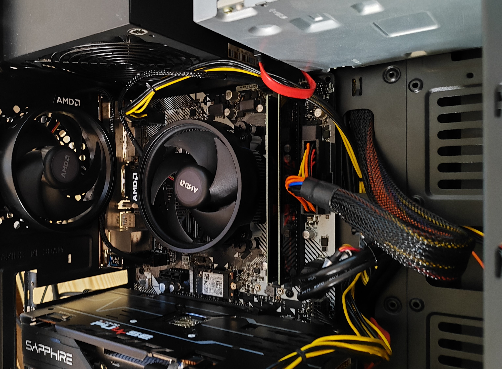

Stavba PC
K tomuto nesmí chybět samotná stavba PC
Svůj první stolní počítač jsem dostal na vánoce v roce 2020, v té době to nebyl ještě počítač postavený mnou, protože moje znalost hardwaru byla skoro nulová, ani to nebylo žádné herní dělo, ovšem odstartovalo to éru, ve které se pohybuji doteď, a na kterou budu mít pozdějí hezké vzpomínky.
První zkušenost se stavěním PC jsem měl, když jsem absolvoval přestavbu svého prvního stolního počítače do jiné PC bedny kvůli estetice a lepšímu proudění vzduchu.
Svoji dovednost jsem zlepšil na kroužku, který se jmenoval "Hry na PC", na kterém jsem teda moc nehrál, ale dal mi zkušenosti, které teď nyní využívám v reálném životě.
Na konci roku 2023 jsem dostal na Vánoce komponenty, ze kterých jsem si postavil počítač, který používám do této doby, a se kterým jsem spokojený, a zatím bych ho celý neměnil.
Následně jsem se dostal na IT školu, kde studuji obor IT, není to sice v některých situacích nejlepší, ale stále platí jedno pořekadlo "i mistr tesař se někdy utne", a je třeba to brát tak, že občas lidi dělají i ve svém oboru nějaké přešlapy, a je dobré se z nich poučit
Pokud bude možnost stavět PC ať už v nějaké jiné firmě, nebo svojí firmě, tak rád bych se tomu věnoval, ovšem stavět 50tý stejný počítač není už zrovna zábava
